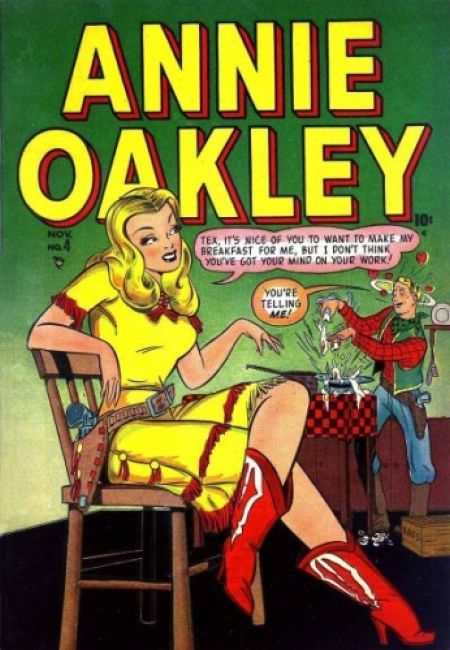
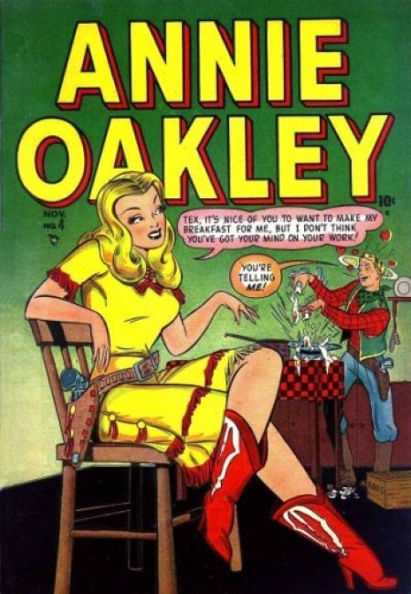

Annie Oakley


 



Series: on-going
Illustrator: Various, Ed Winiarski, Chris Rule
Writer:Various
Publisher: 1948-1956 Atlas (Marvel)
Western Tales of action and adventure starring the famous female sharpshooter, Annie Oakley.
Issue #1
- "Just Love That Cowhand"; Annie is hired on the Barr-X Ranch after capturing a wild steer.
- "The Grecian Wiggle" text story.
- "She's My Gal, Pa"; A lawyer comes looking for a blonde girl who ran away from home and everybody thinks it's Annie.
- "Heart Havoc,"; Gabby thinks he's finally going to get a date with Hedy but it doesn't quite turn out that way.
- "Wrong Steer,"; Sally arranges a rodeo so that Slim can defeat Annie in tests of skill.